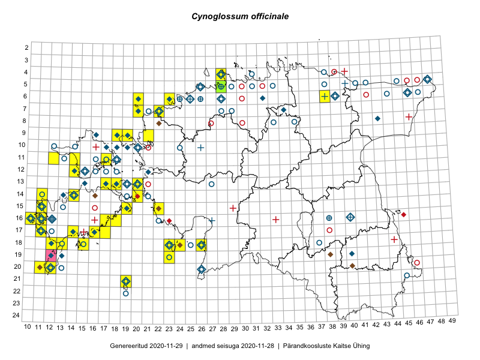

Cynoglossum officinale — harilik rass
Kaardile koondatud taksonid: Cynoglossum officinale L. (61)

Kaart põhineb 61 kirjel, neist:
vaatlusi 60
eksemplare 1
Kaasaegsed1 leiukohad asuvad 39 ruudus.
Andmed “Eesti taimede levikuatlasest”,2 sulgudes ruutude arv:3
● 1971–2005 (64)
○ 1921–1970 (46)
△ kuni 1920 (10)
+ hävinud (0)
? kaheldav (0)
Lisaruudud teistest andmebaasidest:4
ELF: 2006– . . . (0)
PKÜ: 2006– . . . (0)
ELF: 1971–2005 (1)
PKÜ: 1997–2005 (4)
| Ruut | Vaatleja(d) | Vaatlusaeg | Kirje PlutoFis |
|---|---|---|---|
| 13-20 | Peedu Saar, Elle Roosaluste | 2015-07-12 | ruut/ala: Cynoglossum officinale L. |
| 16-10 | Toomas Kukk | 2014-06-21 | ruut/ala: Cynoglossum officinale L. |
| 18-23 | Ott Luuk, Elle Roosaluste | 2015-05-29 | ruut/ala: Cynoglossum officinale L. |
| 19-23 | Ott Luuk | 2015-05-30 | ruut/ala: Cynoglossum officinale L. |
| 11-12 | Eeva-Maria Jeletsky, Tarmo Niitla | 2015-06-27 | ruut/ala: Cynoglossum officinale L. |
| 23-37 | Eeva-Maria Jeletsky, Tarmo Niitla | 2015-07-15 | ruut/ala: Cynoglossum officinale L. |
| 14-11 | Mari Reitalu, Oliver Parrest | 2015-07-14 | ruut/ala: Cynoglossum officinale L. |
| 18-12 | Mari Reitalu, Sirje Azarov, Oliver Parrest | 2015-08-02 | ruut/ala: Cynoglossum officinale L. |
| 15-11 | Mari Reitalu, Oliver Parrest | 2015-07-16 | ruut/ala: Cynoglossum officinale L. |
| 15-19 | Mari Reitalu, Sirje Azarov | 2015-05-16 | ruut/ala: Cynoglossum officinale L. |
| 18-13 | Mari Reitalu | 2014-06-14 | ruut/ala: Cynoglossum officinale L. |
| 17-11 | Mari Reitalu, Triin Reitalu | 2015-08-05 | ruut/ala: Cynoglossum officinale L. |
| 18-15 | Mari Reitalu | 2014-07-17 | ruut/ala: Cynoglossum officinale L. |
| 06-23 | Mari Metsoja, Jaak-Albert Metsoja, Ott Luuk | 2015-06-04 | ruut/ala: Cynoglossum officinale L. |
| 09-18 | Toomas Kukk, Sander Laherand | 2016-07-07 | ruut/ala: Cynoglossum officinale L. |
| 06-49 | Erkki Otsman, Sergei Smirnov | 2016-06-15 | ruut/ala: Cynoglossum officinale L. |
| 11-12 | Peedu Saar, Thea Kull | 2016-08-10 | ruut/ala: Cynoglossum officinale L. |
| 14-14 | Mari Reitalu, Sirje Azarov | 2016-07-26 | ruut/ala: Cynoglossum officinale L. |
| 18-24 | Peedu Saar, Ott Luuk | 2016-09-21 | ruut/ala: Cynoglossum officinale L. |
| 20-11 | Meeli Mesipuu | 2016-09-25 | ruut/ala: Cynoglossum officinale L. |
| 17-17 | Peedu Saar, Ott Luuk | 2016-08-30 | ruut/ala: Cynoglossum officinale L. |
| 19-23 | Ott Luuk, Peedu Saar | 2016-09-21 | ruut/ala: Cynoglossum officinale L. |
| 06-38 | Tõnu Ploompuu | 2016-07-17 | ruut/ala: Cynoglossum officinale L. |
| 09-18 | Ott Luuk, Meeli Mesipuu | 2016-09-16 | ruut/ala: Cynoglossum officinale L. |
| 17-16 | Ott Luuk, Peedu Saar | 2016-08-30 | ruut/ala: Cynoglossum officinale L. |
| 06-20 | Jaak-Albert Metsoja, Mari Metsoja | 2016-06-30 | ruut/ala: Cynoglossum officinale L. |
| 07-22 | Marju Erit | 2015-05-01 | ruut/ala: Cynoglossum officinale L. |
| 16-18 | Mari Reitalu | 2006-05-20 | ruut/ala: Cynoglossum officinale L. |
| 20-12 | Mari Reitalu | 2006-05-27 | ruut/ala: Cynoglossum officinale L. |
| 07-20 | Peedu Saar, Elle Roosaluste, Kaili Orav | 2017-05-29 | ruut/ala: Cynoglossum officinale L. |
| 18-23 | Indrek Tammekänd, Jaak Tammekänd, Aivo Klein | 2017-05-27 | ruut/ala: Cynoglossum officinale L. |
| 15-22 | Indrek Tammekänd, Jana Galadi | 2015-06-03 | punkt: Cynoglossum officinale L. |
| 14-20 | Meeli Mesipuu, Kadri Tali | 2015-06-26 | ruut/ala: Cynoglossum officinale L. |
| 14-20 | Meeli Mesipuu, Kadri Tali | 2015-06-26 | punkt: Cynoglossum officinale L. |
| 15-11 | Meeli Mesipuu, Tiiu Kull | 2016-05-27 | punkt: Cynoglossum officinale L. |
| 11-12 | Thea Kull, Peedu Saar | 2016-08-10 | punkt: Cynoglossum officinale L. |
| 11-14 | Peedu Saar, Thea Kull | 2016-08-09 | punkt: Cynoglossum officinale L. |
| 18-24 | Ott Luuk, Peedu Saar | 2016-09-21 | punkt: Cynoglossum officinale L. |
| 21-19 | Ott Luuk, Meeli Mesipuu | 2016-09-10 | punkt: Cynoglossum officinale L. |
| 20-11 | Meeli Mesipuu | 2016-09-25 | punkt: Cynoglossum officinale L. |
| 09-18 | Meeli Mesipuu, Ott Luuk | 2016-09-16 | punkt: Cynoglossum officinale L. |
| 07-20 | Peedu Saar, Elle Roosaluste, Kaili Orav | 2017-05-29 | punkt: Cynoglossum officinale L. |
| 09-19 | Mari Reitalu | 2007-07-26 | ruut/ala: Cynoglossum officinale L. |
| 18-23 | Mari Reitalu, Sirje Azarov, Ester Valdvee, Triin Reitalu | 2017-07-11 | ruut/ala: Cynoglossum officinale L. |
| 13-18 | Toomas Kukk, Ilmar Uibopuu | 2018-05-26 | ruut/ala: Cynoglossum officinale L. |
| 14-20 | Toomas Kukk, Ilmar Uibopuu | 2018-05-26 | ruut/ala: Cynoglossum officinale L. |
| 14-20 | Toomas Kukk, Ilmar Uibopuu | 2018-05-26 | punkt: Cynoglossum officinale L. |
| 04-28 | Ott Luuk | 2018-09-07 | ruut/ala: Cynoglossum officinale L. |
| 06-23 | Peedu Saar | 2018-07-04 | ruut/ala: Cynoglossum officinale L. |
| 06-23 | Peedu Saar | 2018-07-04 | punkt: Cynoglossum officinale L. |
| 04-28 | Ott Luuk | 2018-09-07 | punkt: Cynoglossum officinale L. |
| 16-11 | Mari Reitalu | 2007-06-15 | ruut/ala: Cynoglossum officinale L. |
| 12-14 | Peedu Saar, Toomas Kukk | 2019-05-22 | punkt: Cynoglossum officinale L. |
| 15-19 | Mari Reitalu, Triin Reitalu | 2019-06-30 | punkt: Cynoglossum officinale L. |
| 17-16 | Toomas Kukk | 2019-06-10 | punkt: Cynoglossum officinale L. |
| 09-21 | Peedu Saar, Ott Luuk, Sten Mander, Kersti Tambets, Kristine Fenske | 2019-08-23 | ruut/ala: Cynoglossum officinale L. |
| 09-21 | Peedu Saar, Ott Luuk, Sten Mander, Kersti Tambets, Kristine Fenske | 2019-08-23 | punkt: Cynoglossum officinale L. |
| 11-17 | Toomas Kukk, Rein Kalamees | 2019-10-05 | ruut/ala: Cynoglossum officinale L. |
| 09-18 | Ott Luuk | 2019-09-17 | punkt: Cynoglossum officinale L. |
| 09-18 | Ott Luuk | 2019-09-17 | punkt: Cynoglossum officinale L. |
| 05-28 | Thea Kull | 2019-06-13 | TAA0148019: Cynoglossum officinale L. |
Kaasaegsed leiukohad (tähistatud värvitud ruutudega) põhinevad peamiselt 2014–2019 välitööandmetel. Väiksemal määral on andmebaasi kantud vanemaid leiuandmeid aastatest 2006–2013.↩︎
Kukk, T., Kull, T., Eesti taimede levikuatlas. Eesti Maaülikool, Põllumajandus- ja Keskkonnainstituut, Tartu, 2005.↩︎
NB! 2005. aasta atlase andmestikus katavad uuemad leiud vanemaid. Näiteks kui liik on ruudus registreeritud 1971–2005, siis pole võimalik öelda, kas ta oli sellest ruudust teada ka enne 1970. aastat. Vana atlase andmetel hävinud ja kaheldavaid leiukohti pole hilisemate (taas)leidude põhjal korrigeeritud.↩︎
Eestimaa Looduse Fondi (ELF) ja Pärandkoosluste Kaitse Ühingu (PKÜ) andmebaasid sisaldavad inventeeritud koosluste kirjeldusi ja liigiloendeid. Neist andmekogudest on kaardile lisatud lisatud vaid need ruudud, millest uue atlase andmekogus taksoni kohta kirjeid veel pole. Kõrvale on jäetud teadaolevalt kaheldavad määrangud. Kaartidel katavad uuema perioodi andmed vanemaid, PKÜ omad ELFi omi. Kattumise tõttu võib kaardil näha olla vähem mingi kategooria ruute kui legendis olev arv näitab. ELFi ja PKÜ andmed ei kajastu hetkel vaatluste tabelis ega ruutude liigiloendites.↩︎